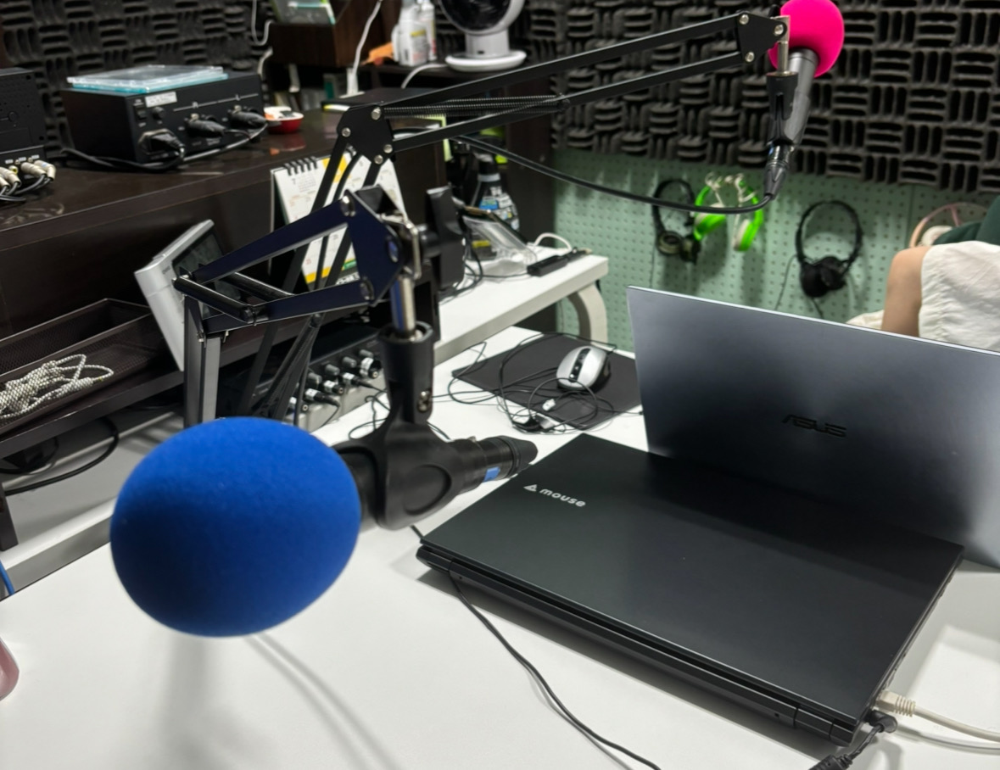
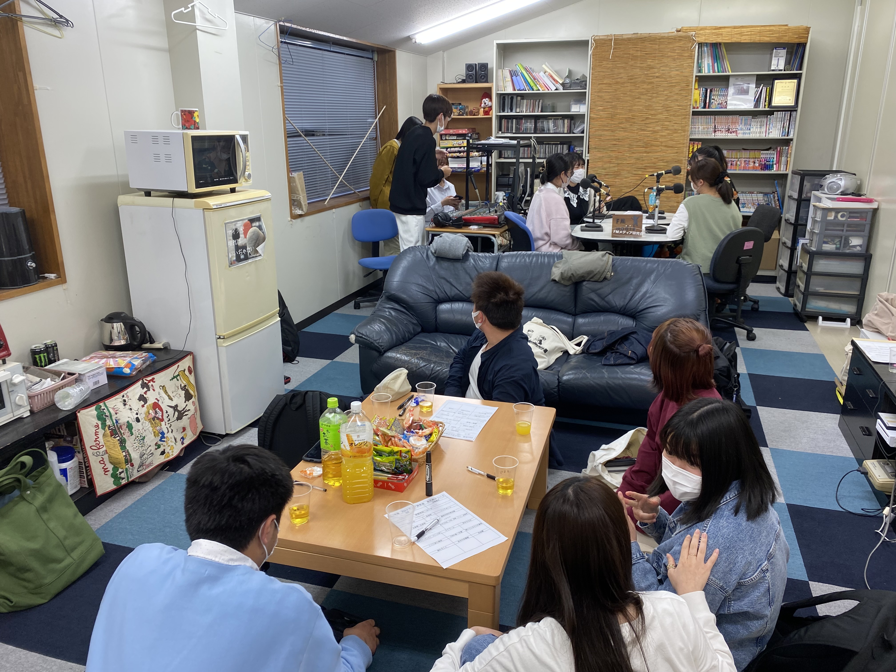
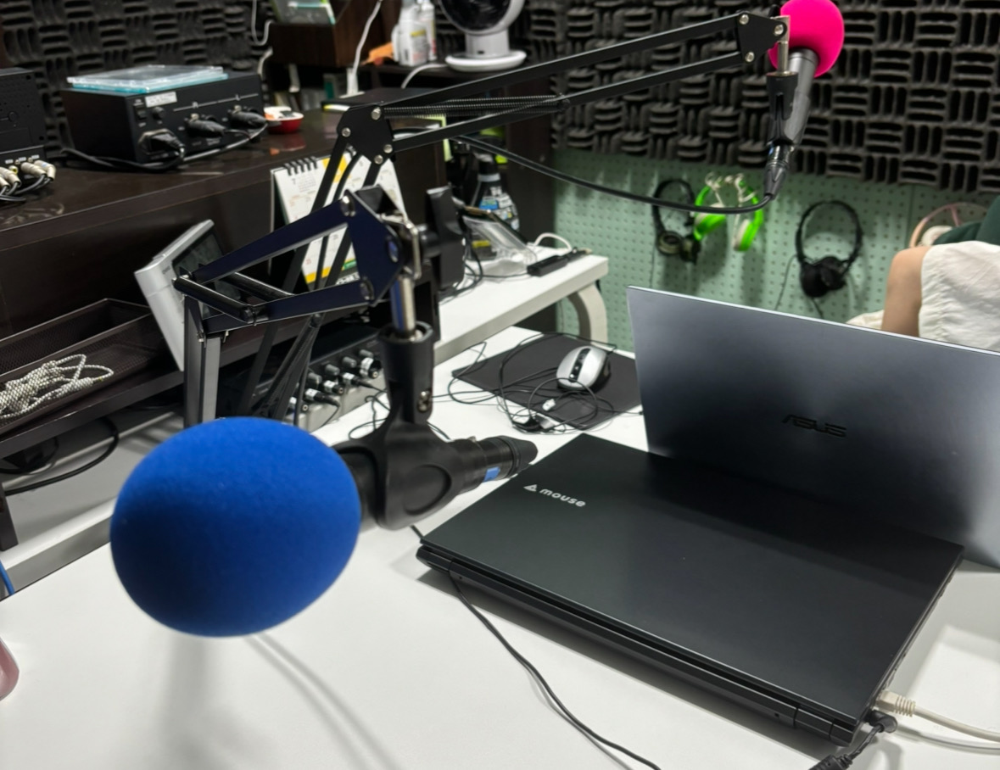
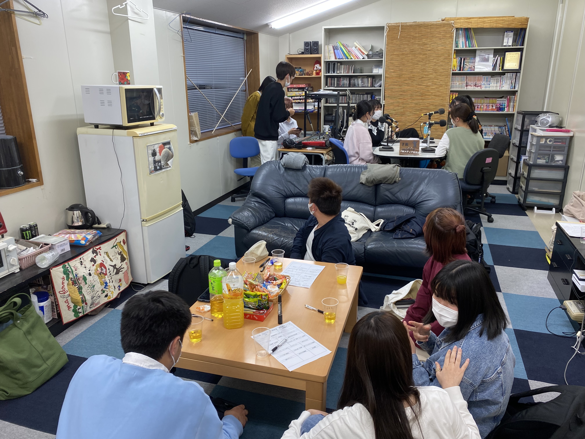

活動について
活動内容
私たちFMmedia研究会は、佐賀大学唯一の放送系サークルです！
主な活動内容として週1回のポッドキャスト放送「 火曜日におしゃべり 」・月2回えびすFMにて1時間生放送「 ラジオノオト 」を行っています！
番組への出演、音響・録音・編集の技術者、台本作成、企画提案など様々な形で活躍できます！
活動時間
毎月第1・3月曜 19:00～20:00
毎週火・木曜 18:30～20:30 ※ポッドキャストは火曜に収録したものをアップしています。
活動場所
佐賀大学 第3サークル会館
メンバー募集中
学年・経験を問わずサークル部員を募集しています。
- ラジオやポッドキャストに出演してみたい
- Nコンに朗読・ラジオCM・アナウンスで参加してみたい
興味のある方はお気軽にご連絡ください！
お問い合わせメンバー構成
所属人数 20人(2024/9/13時点)
- 4年生 3人
- 3年生 4人
- 2年生 3人
- 1年生 10人
佐賀大生の経済学部、理工学部、芸術地域デザイン学部など幅広い学部の学生が所属しています！
中学高校時代での放送経験者は4人です！未経験からでも安心して入部することができます！
#春から佐賀大学#春から佐賀大#春から佐大#fmメディア研究会
— 佐賀大学 FMメディア研究会 (@FMmedia88_8) April 2, 2024
新入生の皆さん、佐賀大学入学おめでとうございます!🌸
どのサークルに入ろうか悩んでいるそこのあなた！
ぜひ、私たちのサークルに来ませんか?
初めての方、経験者の方も大歓迎です！
活動日：基本的に火・木
ビラ配りにも参加します！ pic.twitter.com/87OPql6sGq